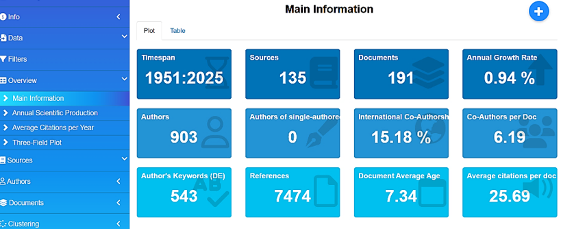

6 Capítulo 2 Análisis bibliométrico para la gestión de un diseño experimentos
El paquete Bibliometrix, desarrollado en R, constituye una herramienta clave para el análisis bibliométrico en distintas áreas del conocimiento, entre ellas la microbiología industrial y el diseño experimental. Su enfoque de código abierto permite recopilar, analizar y visualizar información científica de manera integral, ofreciendo una visión clara sobre las principales tendencias y la evolución de la investigación en cada campo (Aria & Cuccurullo, 2017).
En la microbiología industrial, Bibliometrix se ha convertido en un apoyo fundamental para reconocer líneas emergentes de investigación, colaboraciones internacionales y autores influyentes que marcan el desarrollo del área (Aria & Cuccurullo, 2017). A través de su interfaz visual Biblioshiny, los análisis complejos se vuelven accesibles incluso para quienes no tienen experiencia en programación. Esta accesibilidad favorece la creación de mapas de conocimiento, redes de colaboración y agrupamientos temáticos que ayudan a identificar oportunidades de trabajo conjunto, vacíos en la literatura o la evolución de determinadas técnicas experimentales.
El uso de Bibliometrix y Biblioshiny permite una comprensión argumentada del panorama científico, fomentando decisiones de investigación basadas en evidencia y fortaleciendo la planificación de proyectos dentro de la microbiología industrial.
6.0.1 Procedimiento para el Análisis Bibliométrico con Bibliometrix a partir de una Base de Datos Scopus
Como ejemplo de análisis bibliometrico se emplearán los datos de trabajo de grado titulado (sin publicar) “Evaluación del crecimiento de Cordyceps militaris en diferentes sustratos vegetales”(Chala, 2025).
6.0.2 Palabras clave, operadores Booleanos y búsqueda en bases de datos
El primer paso consiste en generar cinco palabras claves relacionadas con el tema de estudio, como son:
Cultivation: proceso de cultivar Cordyceps militaris en condiciones controladas paraestudiar su crecimiento y desarrollo.
Mycelial growth: crecimiento del micelio, la parte vegetativa del hongo, que escrucial para evaluar su desarrollo.
Substrate optimization: mejora de los sustratos utilizados para el cultivo del hongo, conel fin de maximizar su crecimiento y producción de compuestos bioactivos.
Bioactive compounds: compuestos producidos por Cordyceps militaris, como la cordicepina, quetienen propiedades medicinales y son un indicador de la calidad del crecimiento.
Fermentation conditions: condiciones de fermentación, como la temperatura, pH y nutrientes, que afectan el crecimiento y la producción de metabolitos del hongo.
El segundo paso es generar diez (10) ecuaciones de búsqueda ingresando a una de las siguientes base de revistas indexadas compatibles con Bibliometrix, como son: Web of Science (www.webofscience.com), Scopus (www.scopus.com); OpenAlex (www.openalex.org); Dimensions (www.dimensions.ai); The Lens (www.lens.org); PubMed (https://pubmed.ncbi.nlm.nih.gov/) y Cochrane Library (www.cochranelibrary.com/), desde donde se utilizaran operadores booleanos relacionados con el tema, es importante que cada una de las palabras clave estén encerradas entre comillas ” ” ; al tiempo que se utilicen los conectores: AND y/o OR y NOT para refinar la búsqueda, como se muestran a continuación:
“Cordyceps militaris” AND “growth evaluation”
“Cordyceps militaris” AND (“substrate optimization” OR “culture medium”) AND “growth”
“Cordyceps militaris” AND “cordycepin” AND “growth”
“Cordyceps militaris” AND “temperature” AND “mycelial growth”
“Cordyceps militaris” AND “fermentation” AND (“solid-state fermentation”)
“Cordyceps militaris” AND (“natural growth” OR “artificial cultivation”) AND (“yield” OR “biomass production”)
“Cordyceps militaris” AND (“metabolite profiling” OR “secondary metabolites”) AND “growth conditions”
“Cordyceps militaris” AND (“carbon source” OR “nitrogen source”) AND “mycelial biomass”
“Cordyceps militaris” AND (“rice medium” OR “wheat medium” OR “synthetic medium”) AND “growth performance”
“Cordyceps militaris” AND “commercial production” AND (“growth enhancement” OR “yield improvement”
En la Tabla 1, se aprecian el número de publicaciones científicas relacionadas con algunas de las ecuanciones de búsqueda, lo que permitirá la elección del resultado más promisorio, para seguidamente proceder con el proceso de descarga de los metadatos en formato .csv.
| Ecuación de búsqueda | Documentos encontrados |
|---|---|
| “Cordyceps militaris” AND (“metabolite” OR “growth conditions” | 225 |
| “Cordyceps militaris” AND (“cordycepin”) AND “growth” | 191 |
| “Cordyceps militaris” AND “medium” AND “growth” | 99 |
| “Cordyceps militaris” AND (“substrate optimization” OR “culture medium”) AND “growth” | 40 |
6.0.3 Analísis con bibliometrix
Para iniciar el análisis bibliométrico, se procede a ingresar al programa RStudio®, al tiempo que se realiza la instalación de los paquetes: bibliometrix y bibliometrixData, desde la pestaña de Archivos y Gráficos en la sección de Packages (Figura 8).
Posteriormente, desde la Consola de RStudio se digitan y ejecutan los comandos:
library(bibliometrix) biblioshiny()
Tambien se puede habilitar manualmente en la pestaña de Archivos y Graficos de la interfaz de RStudio, pestaña de Packages (figura9) seleccionado las librerias a usar.

Se abrirá el servidor de Bibliometrix (Figura 9) en el navegador web (Chrome, Mozilla, Edge, entre otros). Es importante aclarar que la interfaz de Bibliometrix únicamente pude ser ejecutada desde RStudio®.
En la parte izquierda se despliega el menú de biblioshiny, y se procede con la importación en “Import or Load” se carga el archivo CSV (Aria & Cuccurullo, 2017), al tiempo que se seleccionan las casillas: Import raw file(s), la procedencia de la base de datos consultada (Scopus, en nuestro caso) , junto la opción: Surname and Initials, y finalmente damos click en el botón de Start (Figura 10).
Después se despliega una nueva ventana que muestra el estado de los componentes de los metadatos importados desde el archivo CSV (Figura 11), allí se muestra una tabla que resume la completitud de los metadatos (para nuestro ejemplo: 191 documentos de Scopus),.

Así mismo Bibliometrix evalúa cada uno de los diferentes campos de metadatos (Abstract, afiliación, autor, tipo de documento, etc.) utilizando junto a diferentes criterios de clasificación como son: “Excelente”, “Bueno”, “Aceptable” “Pobre” y “Completamente perdido” (Figura 11), y que al ser cerrado “Close” muestra una tabla dinámica con todos los datos importados incluyendo el DOI, desde el cual se puede acceder y leer directamente el articulo científico (Figura 12).

6.0.4 Estructura
Bibliometrix (a través de su interfaz Biblioshiny) está estructurado en 8 módulos principales o menús, y dentro de cada uno hay submódulos o indicadores específicos.
| Nº | Módulo | Función general | Submódulos / indicadores |
|---|---|---|---|
| 1 | Data | Importar/cargar bases bibliográficas (Scopus, WoS, PubMed, etc.). | Import or Load; Merge Datasets |
| 2 | Filters | Filtrar el corpus por año, tipo de documento, autores, países, palabras clave. | Time Span; Authors; Countries |
| 3 | Overview | Panorama general con indicadores descriptivos. | Main Information; Annual Scientific Production; Average Citations per Year; Three-Field Plot |
| 4 | Sources | Análisis de revistas/fuentes. | Most Relevant Sources; Bradford’s Law |
| 5 | Authors | Productividad, impacto y colaboración de autores. | Authors’ Production Over Time; Most Cited Authors; Collaboration Network |
| 6 | Documents | Documentos más citados y patrones de citación. | Most Cited Documents; Reference Spectroscopy |
| 7 | Clustering (Conceptual Structure) | Estructura temática/conceptual del campo. | Co-occurrence Network; Thematic Map; Factorial Analysis |
| 8 | Social Structure | Redes de colaboración entre autores, instituciones y países. | Collaboration Network; Country Scientific Production; Collaboration World Map |
6.0.4.1 Modulo Overview
El indicador Main information muestra los valores de los metadatos trabajados, para este ejemplo se tiene un periodo de análisis de1951 a 2025 con un total de 135 fuentes y 191 documentos, la tasa de crecimiento anual es de 0,94%, se identificaron 903 autores, sin registros un solo autor; la coautoría internacional alcanza un valor de 15,18% y el promedio de coautores por documento es de 6,19. Se encontraron 543 palabras clave de autor y 7474 referencias, la edad promedio de los documentos es de 7,34 años y la cantidad media de citas por documento es de 25,69 (Figura 13).

En la sección Annual Scientific Production (traducido: Producción Científica Anual) y se muestra que: la evolución de la cantidad de artículos científicos relacionados con Cordyceps militaris publicados por año, van desde 1951 hasta aproximadamente el año 2000, la producción científica es muy baja, con solo unos pocos artículos publicados anualmente; a partir del 2000, se observa un ligero aumento en la cantidad de publicaciones, pero es a partir de 2010 cuando el crecimiento se acelera considerablemente, reflejando una tendencia ascendente más marcada. Entre 2015 y 2024, la producción científica alcanza sus niveles más altos, con un notable incremento en la cantidad de artículos publicados cada año. Sin embargo, en 2025 se observa una caída significativa, lo que podría deberse a datos incompletos, retrasos en las publicaciones o factores externos como cambios en políticas de financiamiento o publicación (Figura 14).
Para la sección Average Citations Per Year (Traducido: Citas Promedio por año) se muestra la evolución del número promedio de citas recibidas por los artículos a lo largo del tiempo. Para nuestro ejemplo didáctico en la temática de Cordyceps militaris, específicamente en 1951 y 1961, se observan valores relativamente altos, pero con pocos artículos publicados en esos períodos. Posteriormente, durante varias décadas, el número promedio de citas se mantiene bajo y estable. A partir del año 2000 aproximadamente , hay un incremento notable en la cantidad de citas por artículo, alcanzando picos significativos en el 2006 y 2008 (Figura 15).
No corresponde
Para el menú de Overview específicamente en la sección Three-Field Plot (Traducido: Trazo de tres campos) se proporciona una visión general de la colaboración en investigación y los temas principales dentro de un cuerpo específico de literatura. AU_CO (Países): Muestra la participación de China, Tailandia, Reino Unido, Singapur, estados Unidos , entre otros; en los artículos analizados. China lidera la investigación del tema, sugiriendo una fuerte presencia investigadora en el área del estudio; AU (Autores): destaca a: Li X, Li Y, Vongsangnak W y Zhang J, como los autores más productivos, al tiempo que muestra posibles colaboraciones o equipos de investigación.; DE (Descriptores): Los términos que se asocian el estudio del hongo Cordyceps militaris, la biotecnología del hongo, compuestos bioactivos y análisis transcriptómico. Este gráfico reafirma el liderazgo asiático en esta línea de investigación, así como la concentración temática en los compuestos bioactivos de Cordyceps militaris y su aplicación en salud y biotecnología (Figura 16). Importante destacar que Bibliometrix permite cambiar los parametros de análisis y el número de ítems.
Para el menú de Sources en la sección Most Relevant Sources (Traducido: Fuentes más Relevantes) la producción científica procedente de Scopus está lideradas por: International Journal of Medicinal Mushrooms con 15 artículos publicados, seguido de Mycosystema con 8, le sigue: Applied Microbiology and Biotechnology con 5. Dichas revistas destacan por su enfoque en microbiología, biotecnología y farmacología, áreas clave dentro del estudio abordado. La distribución sugiere que la investigación en este campo se encuentra bien representada en revistas especializadas,las demás revistas como: Biology, Bioresource Technolgy, y Nutrients, que cuentan con 3 artículos cada una (Figura 17).
No corresponde
En la sección de Bradford’s Law (Traducido: La Ley de Bradford) y continuando con nuestro ejemplo didáctico de Cordyceps militaris ,se observa que: “International Journal of Medicinal Mushrooms”, junto con “Mycosystema” y “Applied Microbiology and Biotechnology”, conforman el núcleo de fuentes indexadas más relevantes, aportando el mayor número de publicaciones, estas tres revistas están dentro del área sombreada, lo que confirma su papel central en la diseminación del conocimiento sobre C. militaris y compuestos bioactivoss. A medida que se avanza hacia la derecha del gráfico, el número de artículos por revista disminuye, lo que representa publicaciones de interés más disperso (Figura 18).
Para el menú de Authors específicamente en: Authors’ Production over Time (traducido: La producción de los autores a lo largo del tiempo) se muestra que investigadores: Wang Y., Li X., y Li Y., han mantenido una producción constante en los últimos años, con picos significativos en 2020 y 2022. La visualización indica que hay una concentración de publicaciones en los últimos cinco años, lo que sugiere un crecimiento en la investigación dentro de este campo. Otros autores, como Vongsangnak W. y Zhang J., han contribuido de manera más esporádica, pero siguen participando activamente en la investigación del hongo Cordyceps militaris (Figura 19).
Para el menú de Authors específicamente en: Countries’ Scientific Production (traducido: Producción científica de los países), el mapa muestra la distribución geográfica de la producción científica. China es el país con mayor producción científica (azul oscuro); otros países con destacada producción científica entre los que se incluyen: Estados Unidos, Corea del Sur, Tailandia, Japón, India y varios países europeos y asiáticos (azul celeste). Algunos países no presentan producción registrada y aparecen coloreados en gris. En la tabla se observa que China lidera con 702 publicaciones, seguida por Corea del Sur con 212, Tailandia con 83, Japón con 50 e India con 39. Otros países con menor producción incluyen Estados Unidos con 9, Reino Unido con 8, Alemania con 7, Italia con 6 y Colombia con 5 (Figura 20).
Para el menú de Document específicamente en: Most Frequent Words (traducido: Palabras más frecuentes), la visualización muestra las palabras de uso frecuente con el tema de investigación de Cordyceps militaris son: Cordyceps con 196 apariciones y Cordycepin con 187. Otras palabras destacadas incluyen article con 109, Cordyceps militaris con 108, nonhuman con 92, metabolism con 79, deoxyadenosines con 77, controlled study con 76, deoxyadenosine derivative con 65 y adenosine con 64 (figura 21).
Para el menú de Document específicamente en: Reference Spectroscopy (traducido: Espectroscopia de referencias), la visualización muestra la evolución de las referencias citadas en espectroscopia a lo largo del tiempo; antes de 1990, el número de referencias citadas se mantuvo prácticamente nulo y a partir de 1995, se observa una pendiente creciente sostenida, que se acelera alrededor del año 2005, alcanzando su punto máximo entre 2015 y 2020 con más de 400 referencias citadas por año, después de 2018, se evidencia una disminución en el número de referencias citadas. También se puede observar una caída abrupta después del 2020 que puede explicarse por efectos de rezago en la citación, ya que las publicaciones recientes aún no han tenido suficiente tiempo para acumular cita (Figura 22).
Para el menú de Conceptual Structure concretamente en: Co-occurrence Network (traducido: Red de Coocurrencias), la red se encuentra claramente dividida en dos comunidades principales, identificadas por los colores rojo y azul. La comunidad roja, dominada por términos como cordycepin, Cordyceps militaris, metabolism y article, se orienta al estudio bioquímico y farmacológico del compuesto, mientras que la comunidad azul está asociada a modelos experimentales, destacando términos como animal experiment, human, mouse y cell line. Esta segmentación temática sugiere una dualidad en la línea de investigación: una centrada en la caracterización química y otra en los efectos biológicos en modelos preclínicos. El análisis de centralidad (como grado y betweenness) permitiría identificar términos puente como: nonhuman o controlled study, que conectan ambas comunidades (Figura 23).
Para el menú de Conceptual Structure concretamente en: Factorial Analysis (traducido: Análisis factorial), se muestra una representación bidimensional de los términos más relevantes dentro del corpus bibliográfico analizado, en el eje X (Dim 1), que explica el 50,18% de la variabilidad, se observan términos fuertemente relacionados con estudios experimentales: in vivo e in vitro, como in vitro study, mouse, animal tissue y protein expression, agrupados en el cuadrante inferior derecho. Esto sugiere una fuerte carga temática asociada a investigaciones biomédicas y farmacológicas; por otro lado, en el eje Y (Dim 2), que explica un 9,68% adicional, aparecen términos como: transcriptome y carbon, más vinculados a estudios genéticos y metabólicos, separados del resto de la nube léxica; dicha segmentación espacial revela la existencia de subdominios temáticos diferenciados dentro del campo de estudio de los cordyceps y sus derivados, evidenciando un enfoque dual: uno centrado en la bioquímica y biotecnología del hongo, y otro enfocado en los ensayos experimentales en organismos modelo (Figura 24).
Ingresando en menú de Social Structure concretamente en: Collaboration Network (traducido: Red de colaboración), según Aria & Cuccurullo (2017) el análisis se realiza mediante redes de coautoría, las cuales revelan patrones de colaboración y productividad; continuando con el tema de Cordyceps militaris, se muestra una red de colaboración entre autores en la que los nodos representan investigadores y las conexiones indican coautoría en publicaciones científicas, se observan varios grupos de colaboración con diferentes colores lo que sugiere comunidades de investigadores que trabajan juntos frecuentemente Algunos nodos como Li X y Vongsangnak W tienen un tamaño mayor lo que indica que son autores con un alto número de colaboraciones mientras que otros aparecen más aislados mostrando menos conexiones dentro de la red (Figura 25).
Al ingresar al menú de Social Structure en la sub sección: Countries’ Collaboration World Mak (traducido: Mapa mundial de colaboración entre países) se representa visualmente las redes de colaboración científica entre países en torno a investigaciones relacionadas con el género Cordyceps y el compuesto activo Cordycepina; La intensidad del color azul en el mapa refleja el volumen de publicaciones: a mayor intensidad, mayor producción científica: en este caso, se observa que China destaca significativamente como el nodo más activo, lo cual es consistente con su liderazgo en investigaciones sobre hongos medicinales. La Figura 26 muestra un patrón de colaboración transcontinental, con conexiones entre China y países como Estados Unidos, Alemania, Corea del Sur, y Australia, lo cual sugiere una red científica relativamente globalizada, esta interacción internacional favorece la transferencia de conocimiento, fortalece la calidad metodológica de los estudios y facilita el acceso a recursos técnicos avanzados, dicho mapa es útil para identificar núcleos de producción científica, barreras geográficas o idiomáticas, y oportunidades de cooperación estratégica entre países.